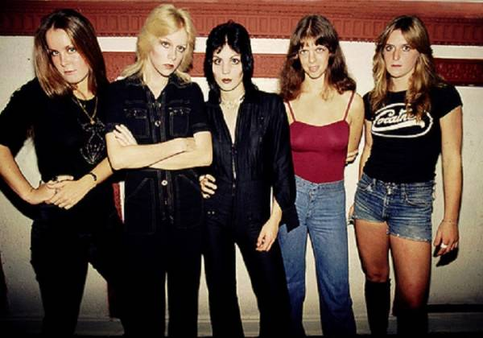

The Runaways(1975~1979) 공식 사이트
미국 로스엔젤레스에서 데뷔한 여성 록 밴드이다.
장르는 하드 록, 펑크 록.
조안 제트(Joan Jett)
체리 커리(Cherie Currie)
리타 포드(Lita Ford)
샌디 웨스트(Sandy West)
재키 폭스(Jackie fox)
The Runaways(1976)
Queens of Noise(1977)
Waitin' for the Night(1977)
And Now... The Runaways(1978)
Flaming Schoolgirls(1980)
밴드를 소재로 한 전기영화 <런어웨이즈(2010)>가 있다.